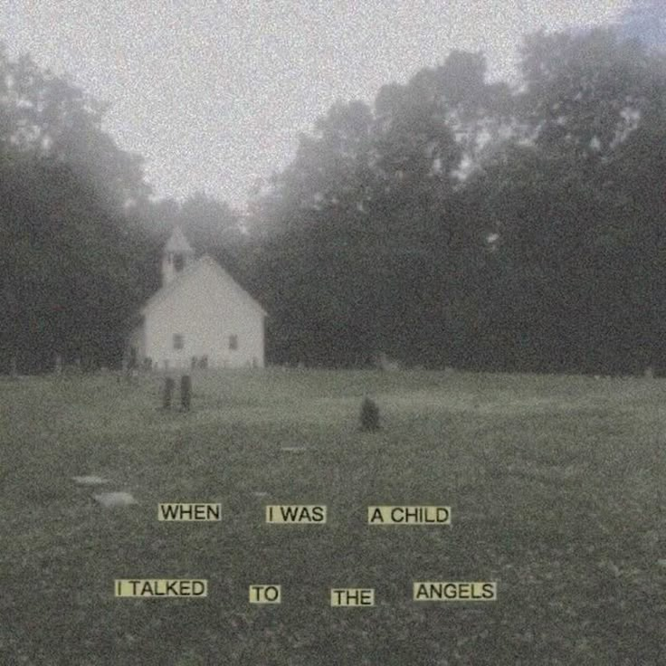

O subgênero de terror Analog Horror tem ganhado destaque nos últimos anos, especialmente no universo digital, trazendo uma forma única de assustar e envolver o público. Esse estilo busca evocar o medo por meio de estéticas retro e elementos nostálgicos dos anos 80 e 90, usando uma abordagem de "encontrar fitas antigas" ou registros de mídia deteriorados. Muitas vezes, esses vídeos são apresentados como se fossem programas de TV ou transmissões que estão distorcidas ou com falhas técnicas, criando uma sensação de algo errado, distorcido e assustador.
Ao contrário dos tradicionais filmes de terror, o Analog Horror geralmente não conta com monstros ou criaturas visíveis. Em vez disso, o terror vem do que é sugerido: a sensação de que algo está observando, uma presença inexplicável ou o uso de símbolos e imagens que evocam o sobrenatural. Exemplos de obras icônicas desse subgênero, como Local 58, são construídas por meio de uma série de vídeos curtos que combinam o uso de gravações VHS, transmissões de TV antigas e um clima de distorção digital, o que cria uma atmosfera surreal e desconfortante.
O uso de falhas técnicas, como ruídos de estática ou cortes abruptos, além de imagens corrompidas ou deformadas, aumenta a sensação de que algo está errado no nível mais fundamental da mídia. A estética dessas produções evoca uma sensação de fragilidade e vulnerabilidade, como se estivessem sendo observadas por algo além da nossa compreensão. O Analog Horror também explora temas de paranoia, controle mental e realidades distorcidas, frequentemente fazendo com que o público questione se o que está vendo é real ou apenas uma construção manipulada
A popularidade desse subgênero cresceu principalmente nas plataformas de vídeos online, onde os criadores podem experimentar com formatos não convencionais e criar atmosferas densas e inquietantes. O Analog Horror é, assim, um exemplo de como o terror pode ser reimaginado, utilizando a nostalgia e a dissonância entre a mídia conhecida e o conteúdo perturbador para criar uma experiência única de medo.
